实体建模 (Solid Modelling)¶
约 3355 个字 54 行代码 17 张图片 预计阅读时间 12 分钟
实体建模是 CAD/CAM/CAE 的核心基础，用计算机完整表示三维物体的几何形状、体积和拓扑结构。与线框模型不同，实体模型能够回答「这个点在物体内部还是外部？」这类根本性问题。
核心要点
三类主要方案：分解表示（Octree / Spatial Enumeration）→ 离散化空间；构造表示（CSG / Sweep）→ 组合生成；边界表示（B-Rep）→ 精确描述边界。工业 CAD 以 B-Rep 为主，CSG 常用于快速原型。
1. 线框模型的致命缺陷¶
线框模型（Wireframe Model）是最早的三维表示方式，仅存储物体的边（点、直线、曲线）。
例子：一个立方体在线框模型中只有 12 条边，没有面的概念。
线框模型无法完成的 6 类任务¶
| 任务 | 为什么做不到 |
|---|---|
| 质量/体积计算 | 不知道哪些空间被占据 → 无法算重量 |
| 消隐线/面生成 | 不知道哪个面在前 → 无法正确消影 |
| 着色渲染 | 没有面的概念 → 无法 Phong/Gouraud 着色 |
| 干涉与间隙分析 | 无法判断两物体是否碰撞/嵌入 |
| NC 加工路径 | 不知道材料在哪里 → 无法生成刀具路径 |
| 有限元网格 | 没有体积信息 → 无法剖分网格 |
Nonsense Objects（无意义物体）¶
线框模型可以表示出在实际三维空间中不可能存在的物体。
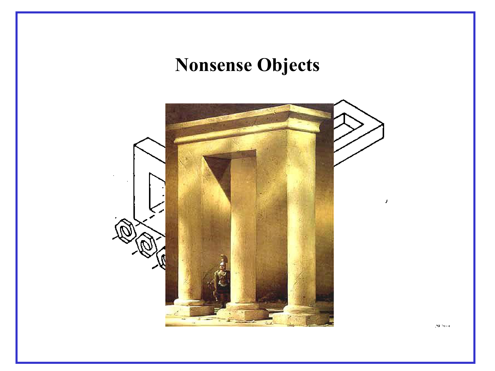
经典例子：图中有两个立方体，线框表示完全相同（都是 12 条边），但一个是有体积的方块，另一个是"凭空悬浮"的线框。线框模型无法区分这两者。
 这就引出了实体建模的核心问题：如何形式化地定义"有效实体"？
这就引出了实体建模的核心问题：如何形式化地定义"有效实体"？
2. 什么东西才算「实体」？¶
一个有效的实体对象必须同时满足以下 6 条：
考试重点
6 条实体判定条件必须记住：Finite、3D、Rigid、Closure、Describable、Boundary。
六大条件详解¶
| 条件 | 解释 | 反例 |
|---|---|---|
| 有限（Finite） | 占据有限空间，不能无限延伸 | 一根无限长的圆柱不是实体 |
| 均匀三维（Homogeneously 3D） | 在任何点都有体积，不能有"纸片" | 一个 zero-thickness 的面不是实体 |
| 刚性（Rigid） | 形状不变（在表示层面） | 定义上的要求，并非模拟要求 |
| 封闭性（Closure） | 刚性运动和布尔运算后仍是实体 | 两个球差集后必须是有效实体 |
| 有限可描述（Finitely Describable） | 用有限数据就能表示 | 分形表面无法有限描述 |
| 边界可确定（Determinable Boundary） | 能明确区分内部和外部 | 非流形物体不行 |
问题物体（Questionable Objects）¶
下图展示了两类不满足实体条件的物体：
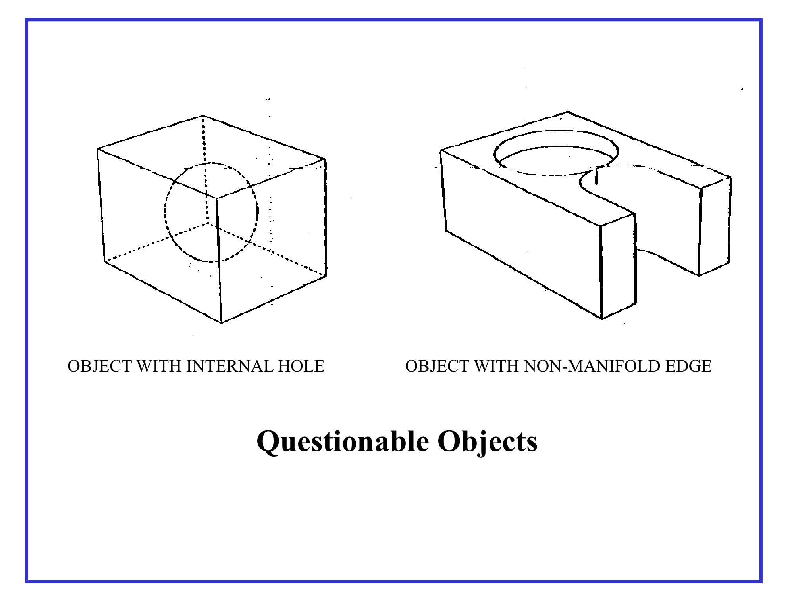
- 左图（Internal Hole）：物体内部有封闭空腔 → 边界可判定，但需要区分外边界和内边界
- 右图（Non-Manifold Edge）：一条边被三个面共享 → 存在点其邻域不等于一个圆盘 → 不是 2-Manifold
Manifold（流形）概念：物体上任意点的无穷小邻域，在拓扑上等价于二维平面上的一个圆盘。如果某条边被三个或以上的面共享，该边上的点的邻域就是"三岔"而非圆盘，称为非流形边（Non-Manifold Edge）。
3. 三大表示方案总览¶
| 分解表示 | 构造表示 | 边界表示 | |
|---|---|---|---|
| 核心思想 | 将空间划分为体素 | 用基本操作生成实体 | 描述物体的表面边界 |
| 代表方法 | Octree、Spatial Enum | CSG、Sweep、Primitive Inst | B-Rep、Polyhedron |
| 精度 | 近似 | 精确（基元级） | 精确（几何级） |
| 工业应用 | 有限元/医学影像 | 早期 CAD | 现代 CAD（CATIA/SolidWorks） |
一、分解表示（Decomposition）¶
4.1 空间占有枚举（Spatial Occupancy Enumeration）¶
思想：将三维空间划分为均匀立方体网格（Voxel），每个体素标记为 0（空）或 1（占）。
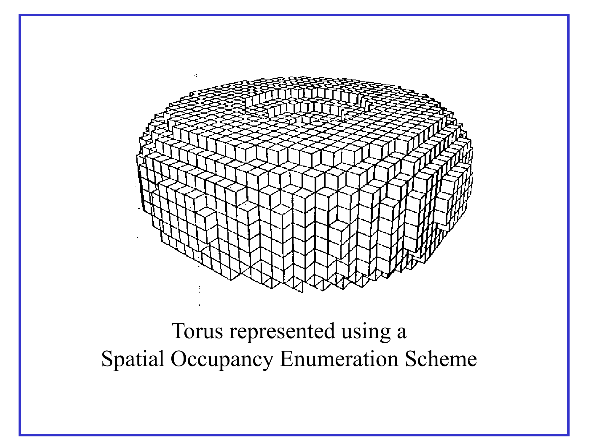
上图展示了环面（Torus）的空间枚举表示。可以看到，即使是光滑曲面，也只能用阶梯状体素近似。
例子：一个 100×100×100 的网格表示一个球体。球内部的体素为 1，外部为 0。球的体积 ≈ 标记为 1 的体素数 × 单个体素体积。
性质：
- ✅ 唯一且无歧义 —— 每个物体只有一种枚举结果
- ✅ 不需要有效性检查 —— 任何 0/1 组合都对应某个物体
- ✅ 布尔运算极简单 —— 逐体素 AND/OR/NOT
- ❌ 存储需求 = \(O(n^3)\)（分辨率 \(n\) 时需 \(n^3\) 个体素）
- ❌ 精度由分辨率决定，无法精确表示曲面法向
4.2 空间划分方案¶
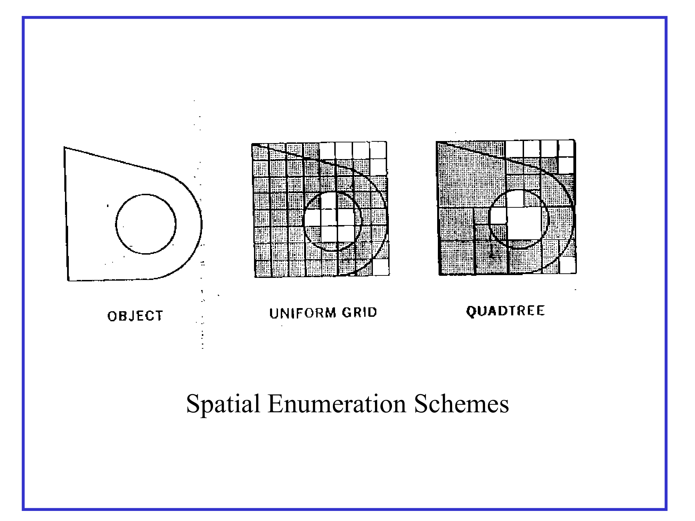
上图对比了多种空间划分策略：
- 均匀网格：所有体素大小相同，浪费严重
- 层次划分：大块全空/全满不再细分 → 大幅压缩
4.3 四叉树（Quadtree）— 二维先行¶
四叉树是八叉树的二维版本，每层四等分矩形。下图展示了四叉树的数据结构：
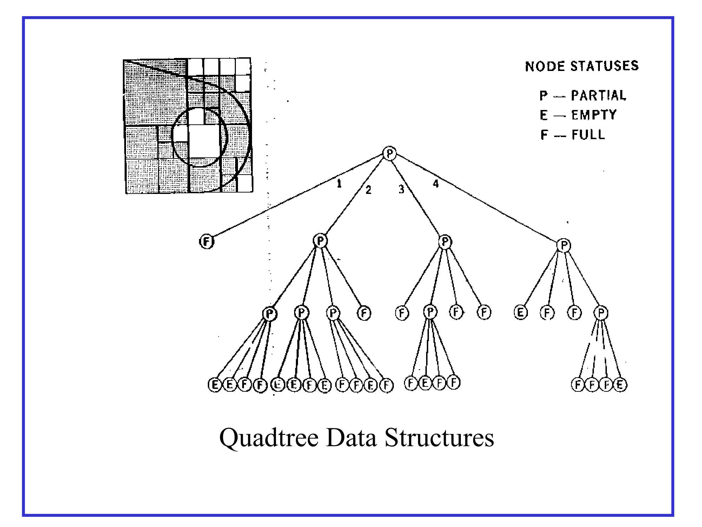
例子：一个 8×8 的网格表示一个 L 形区域。左上角 4×4 全白 → 一个节点标记为 Empty。右下角 4×4 全黑 → 一个节点标记为 Full。其余区域继续四等分。
4.4 八叉树（Octree）— 三维推广¶
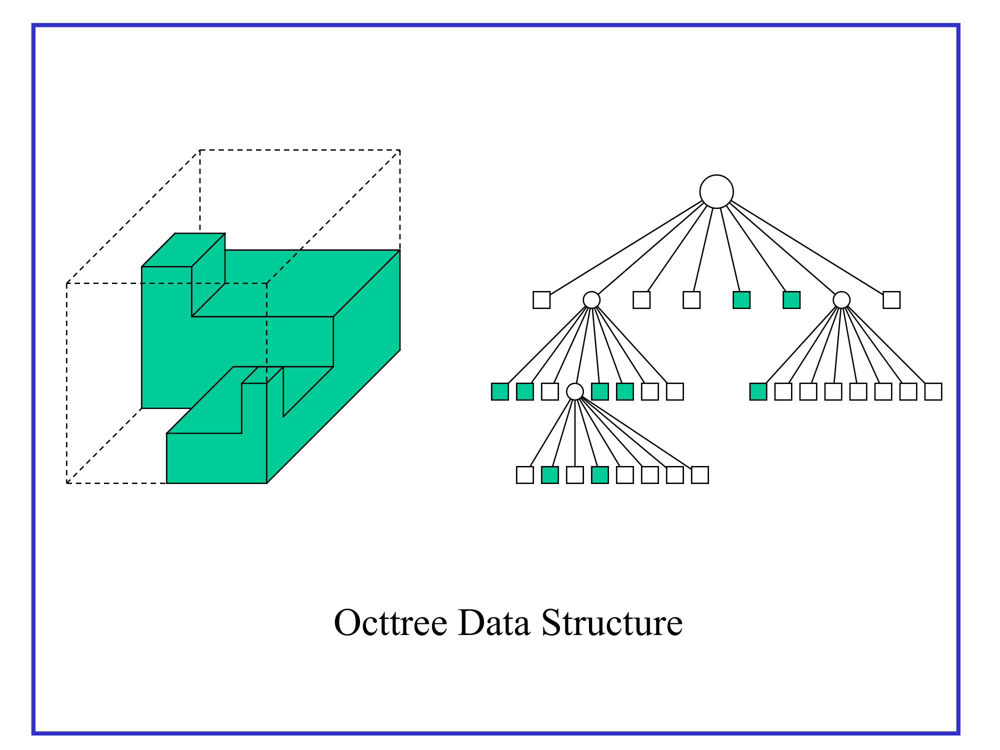
递归规则：
性质：
| 性质 | 说明 |
|---|---|
| 存储 | 远小于均匀枚举（全满/全空不细分） |
| 精度 | 近似，分辨率由递归深度决定 |
| 唯一性 | ✅ 唯一无歧义 |
| 节点数 | 与物体表面积成正比 |
| 布尔运算 | 从根向叶并行遍历两棵树逐节点运算 |
例子：一个球的八叉树表示。完全在球内部的中心大块标记为 Full。完全在球外部的角落块标记为 Empty。只有跨越球面的块才递归细分。最深层级的节点决定了球的表面精度。
布尔运算示例（八叉树 A ∪ 八叉树 B）：
Union(nodeA, nodeB):
if nodeA == Full OR nodeB == Full → Full
elif nodeA == Empty → nodeB
elif nodeB == Empty → nodeA
else → 递归 Union 8 个子节点
二、构造表示（Constructive Representations）¶
5.1 基元实例化（Primitive Instancing）¶
思想：定义一组参数化的三维基元族，通过改变参数产生不同实例。
例子 — 齿轮基元：
Gear(module=2.0, teeth=20, thickness=10mm, bore=8mm)
Gear(module=2.0, teeth=30, thickness=15mm, bore=10mm)
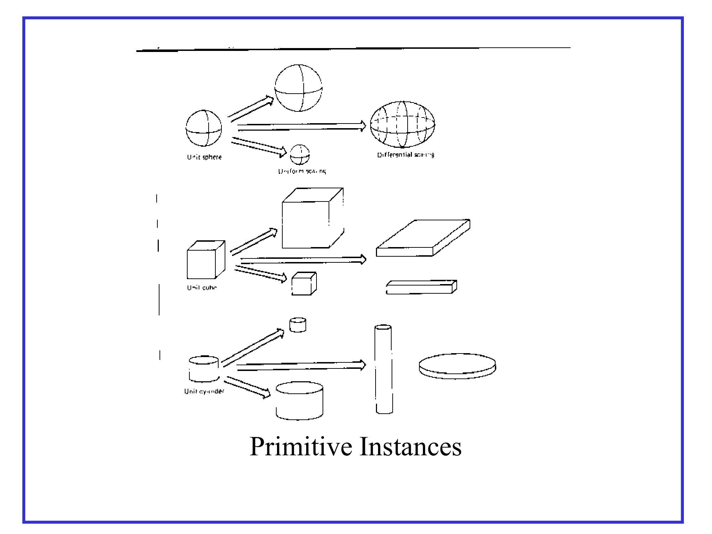
特点：
- ✅ 适合标准化零件库（齿轮、螺栓、轴承）
- ✅ 参数化不仅是尺寸变换，还有结构特征（齿数、模数）
- ❌ 不支持基元间的组合 —— 无法将基元和螺栓组装
与 CSG 的区别
基元实例化中，每个基元是独立的对象，没有 Union/Intersection/Difference 等布尔运算能力。CSG 通过布尔运算组合基元。
5.2 扫掠表示（Sweep Representation）¶
思想：将二维截面沿路径移动，其轨迹生成三维实体。
平移扫掠（Extrusion）— 最常用¶
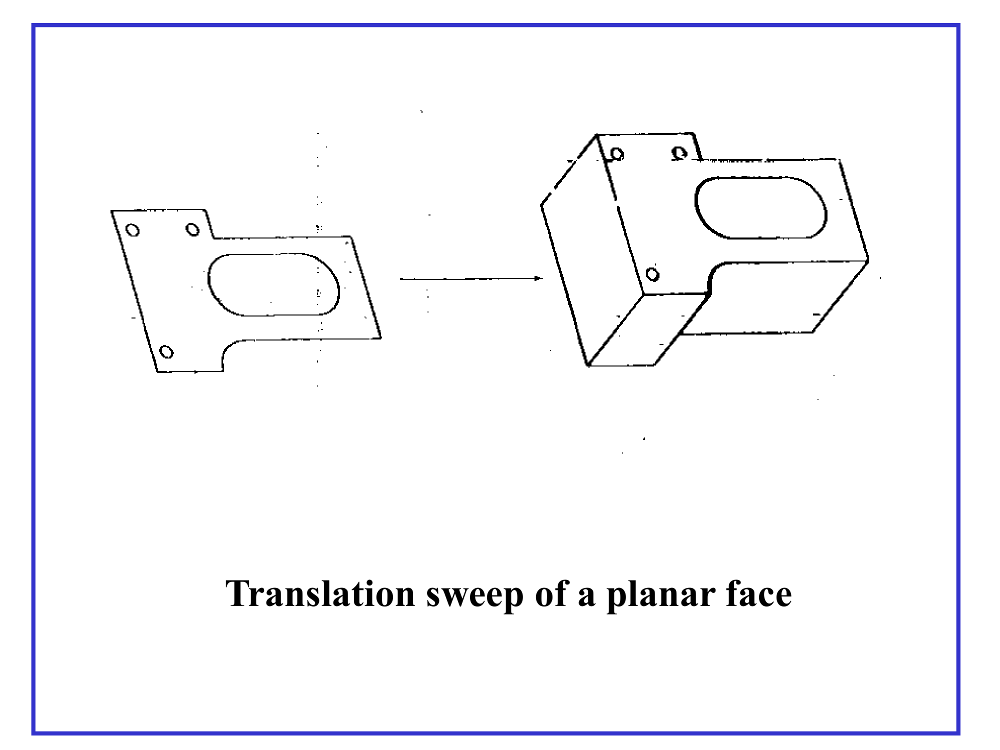
例子：
- 工字钢截面沿直线方向拉伸 → 工字钢梁
- 圆形截面拉伸 → 圆柱体
- 任意多边形截面拉伸 → 棱柱
数学表达：\(Sweep(P, \vec{d}, L)\) = 将平面图形 \(P\) 沿方向 \(\vec{d}\) 移动距离 \(L\)。
旋转扫掠（Revolve）¶
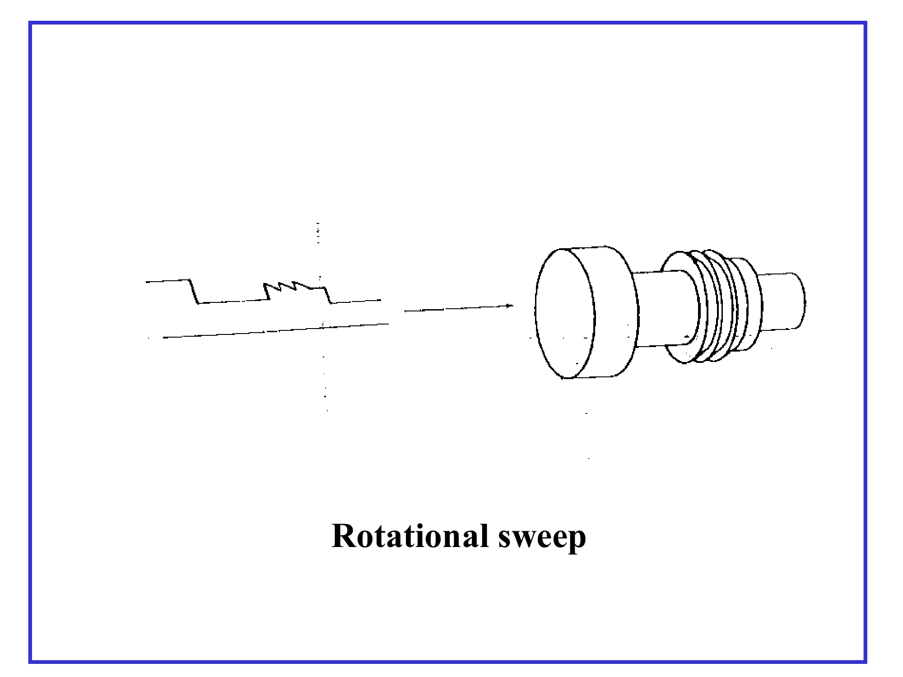
例子：
- 半圆绕直径旋转 → 球体
- 矩形绕一边旋转 → 圆柱体
- 花瓶截面轮廓绕中心轴旋转 → 花瓶
数学表达：\(Sweep(C, axis, \theta)\) = 将曲线 \(C\) 绕轴旋转角度 \(\theta\)，通常 \(\theta = 360^\circ\)。
放样（Lofting）¶
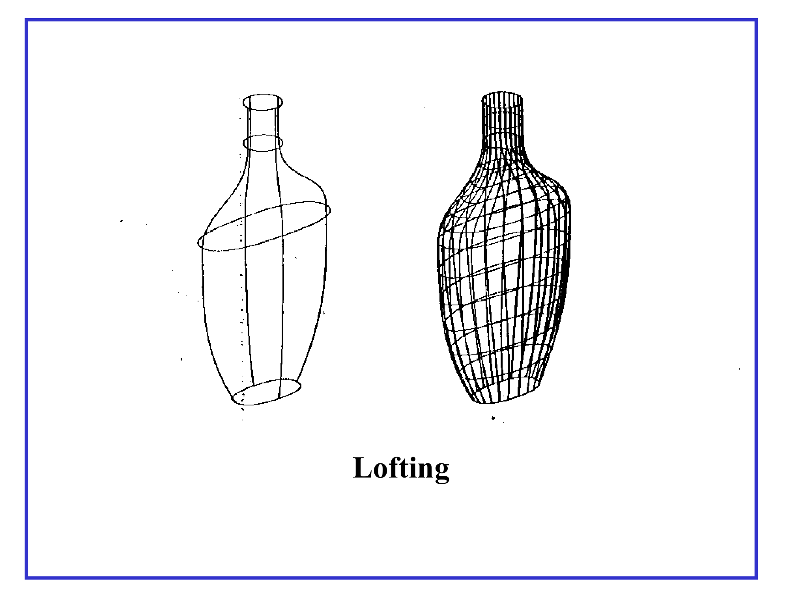
例子 — 船体建模：
参数化扫掠¶
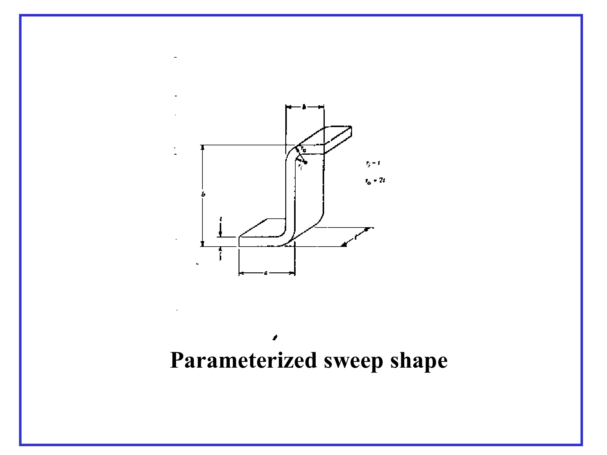
沿路径移动时，截面不仅可以平移旋转，还可以缩放和扭转。 例子：弹簧 = 圆形截面沿螺旋线路径 + 旋转跟随。
扫掠的陷阱 — 无效实体¶
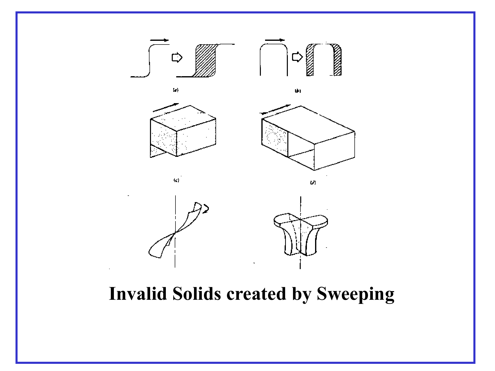
问题案例：
- 截面过大 + 路径曲率过大 → 自交（物体穿透自己）
- 平移扫掠方向平行于截面法向 → 产生退化体（无体积的面）
- 截面旋转时扭曲过度 → 产生非流形结构
5.3 CSG（构造实体几何）— 布尔运算的威力¶
思想：用正则布尔运算组合简单基元（球、圆柱、方块等），构建复杂实体。
正则布尔运算是什么？
普通布尔运算可能产生悬边、悬面、零体积结构。正则化（Regularization） = 取内部点的闭包：\(A \otimes B = \text{closure}(\text{interior}(A \text{ op } B))\)，自动消除这些异常。
三种基本布尔运算¶
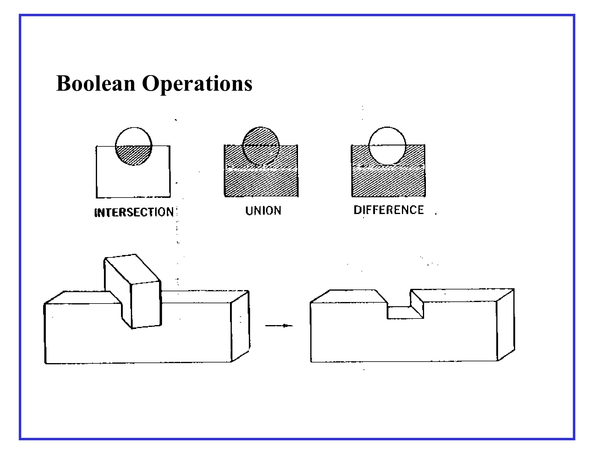
| 运算 | 符号 | 含义 | 例子 |
|---|---|---|---|
| 并集（Union） | \(A \cup B\) | 两物体的全部空间 | 桌腿 ∪ 桌面 = 桌子 |
| 交集（Intersection） | \(A \cap B\) | 两物体的公共空间 | 球 ∩ 立方体 = 圆角方块 |
| 差集（Difference） | \(A - B\) | A 中去掉 B 的部分 | 方块 − 圆柱 = 带孔的方块 |
例子 — 用 CSG 造一个带孔的圆柱：
例子 — 造一个螺母：
然后再用六角棱柱做差集 → 六角形外轮廓。CSG 树¶
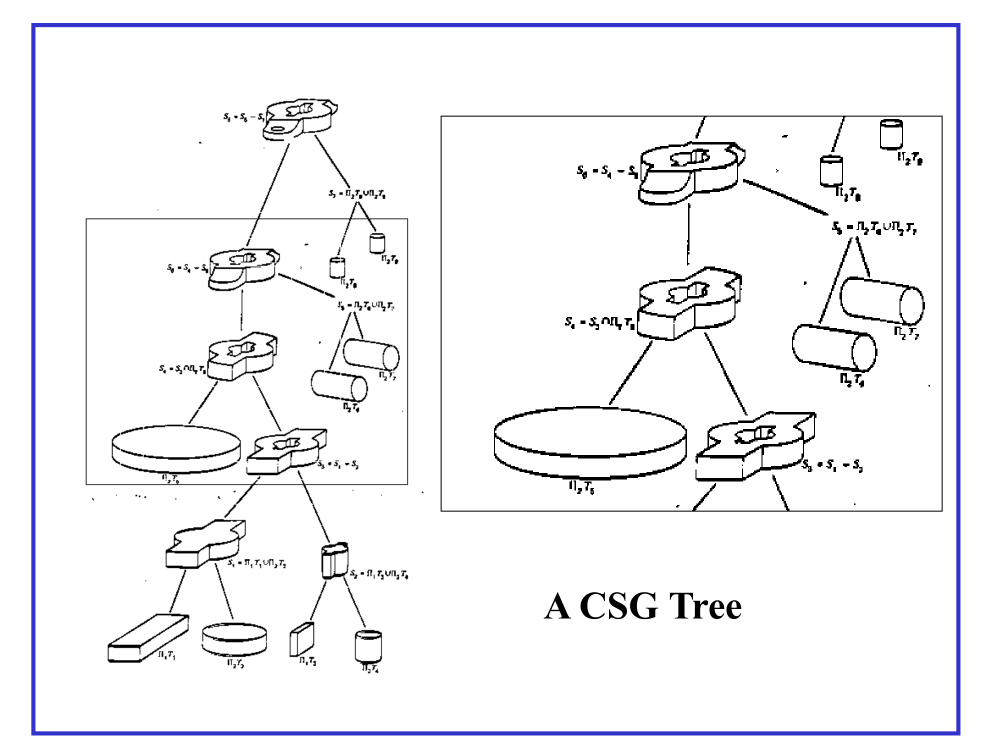
- 内部节点：布尔运算（∪, ∩, −）或几何变换（平移/旋转/缩放）
- 叶节点：基元（Block, Cylinder, Sphere, Cone, Torus, Wedge）
- 树边有序：区分左右子树（差集 A − B ≠ B − A）
性质总结：
| ✅ 优点 | ❌ 缺点 |
|---|---|
| 数据结构极简单（二叉树） | 局部操作困难（改螺母螺纹需重建树） |
| 基元有效 → 结果始终有效 | 渲染需反复求交（Ray Casting） |
| 历史记录完整，可回退编辑 | 不唯一（同一物体多种 CSG 树） |
| 存储紧凑 | 无法直接访问边界信息 |
三、边界表示（B-Rep）¶
边界表示是现代 CAD 软件（CATIA、SolidWorks、Nx）的核心表示方式。
6.1 核心思想¶
不直接存储体积，而是存储物体的边界（面、边、顶点）。通过边界隐式定义体积。
类比：鸡蛋壳的形状定义了鸡蛋。如果蛋壳完整封闭，里面就是蛋黄。B-Rep 就是这个"蛋壳"。
6.2 多面体与欧拉公式¶
多面体（Polyhedron） = 由平面多边形围成的实体。每条边恰好被两个面共享，且可以遍历所有面而不"跳跃"。
考试重点
\(V - E + F = 2\) 是必考公式。对任意简单多面体（可变形为球体）恒成立。
验证 — 正方体：
验证 — 四棱锥（金字塔）：
广义欧拉公式¶
真实零件常有孔洞和空腔：
| 符号 | 含义 | 例子 |
|---|---|---|
| \(V\) | 顶点数 | — |
| \(E\) | 边数 | — |
| \(F\) | 面数 | — |
| \(L\) | 面上的内环数（Loop / Hole） | 每个通孔在每个面上产生一个环 |
| \(S\) | 独立的壳体数（Shell） | 一般来说为 1 |
| \(G\) | 贯穿孔数（Genus / 亏格） | 环面 \(G=1\)，球 \(G=0\) |
例子 — 带一个通孔的方块：
可以想象为方块挖了一个圆柱洞。洞穿过了 2 个面 → 每个面上多了一条内环。
假设：V=16, E=24, F=10, L=2（两个面上的孔环）, S=1, G=1
验证：V − E + F − L = 16 − 24 + 10 − 2 = 0
2(S − G) = 2(1 − 1) = 0 ✓
例子 — 环面（Torus / 甜甜圈）：
6.3 Facetted Model（面片模型）¶
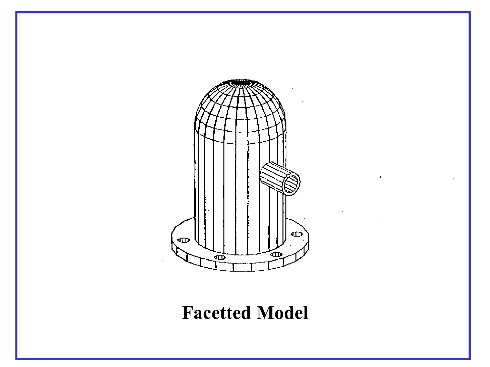
曲面物体被近似为许多小平面的集合。三角形的密度决定了逼近精度。
例子：一个球体用 1000 个三角形近似。三角形越多越接近真球，但数据量也越大。
6.4 B-Rep 的数据组织¶
B-Rep 存储两类数据：
几何数据（Geometric Data）¶
物体的"坐标"——决定了物体的形状：
- 顶点坐标 \((x, y, z)\)
- 曲线控制点（Bézier / NURBS）
- 曲面控制网格参数
拓扑数据（Topological Data）¶
组件的"连接关系"——决定了物体的结构：
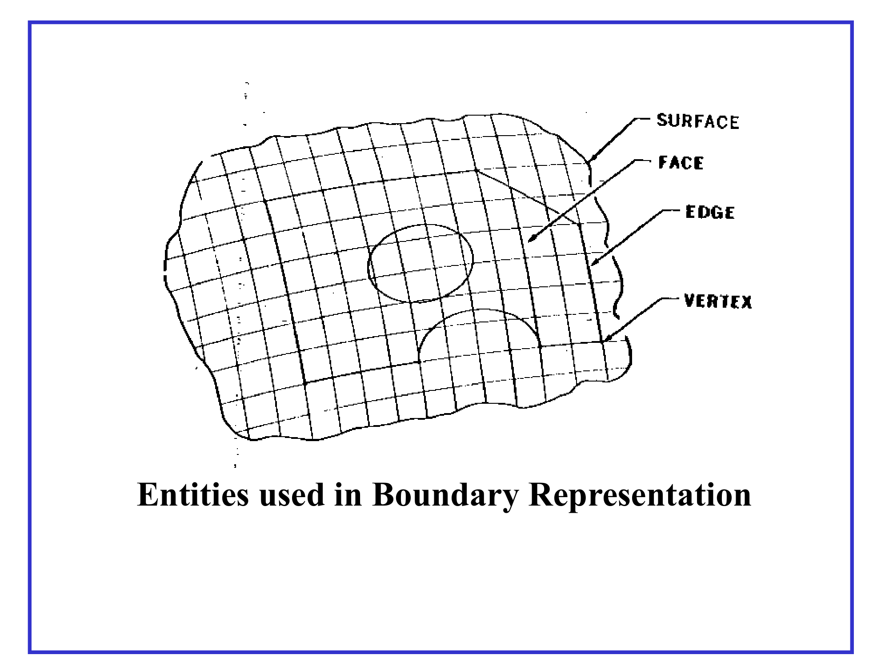
层次结构：
Solid（实体）
└── Shell（壳体）— 包围体积的封闭面集合
└── Face（面）— 边界上的一个面
└── Loop（环）— 面的边界（外环/内环）
└── Edge（边）— 两个面的交线
└── Vertex（顶点）— 边的端点
例子：一个方块（6 个面）→ 每个面有 1 个外环（4 条边）→ 每条边 2 个端点。所有数据既有几何坐标又有拓扑关系。
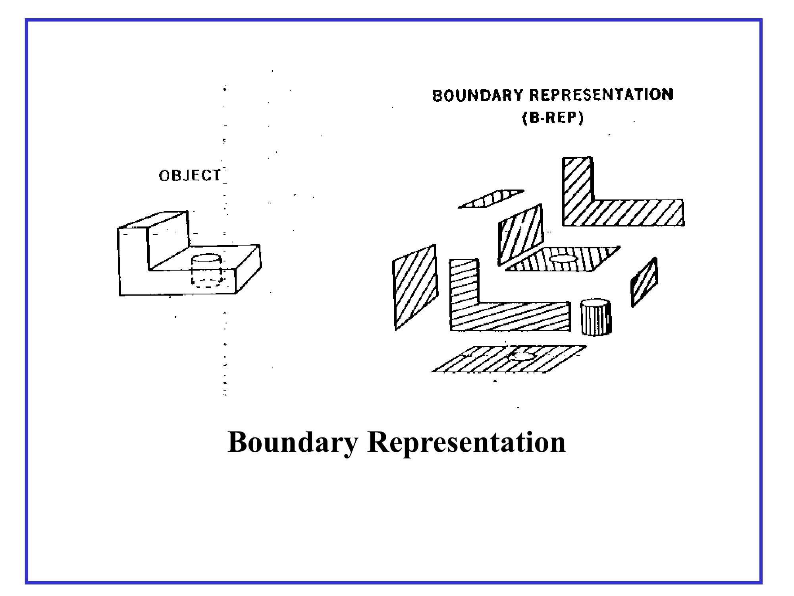
几何 vs 拓扑
几何确定「在哪里」，拓扑确定「谁连着谁」。同一拓扑可以对应不同几何（方块 vs 斜方块）。修改几何不影响拓扑，修改拓扑必须重新验证。
6.5 欧拉算子（Euler Operators）¶
B-Rep 模型的所有合法编辑操作可以归结为 5 个基本算子 + 它们的逆操作。
| 算子 | 全称 | 功能 | 例子 |
|---|---|---|---|
| MEV | Make Edge and Vertex | 在已有边上加一个新顶点，创建新边 | 将一条边一分为二 |
| MFE | Make Face and Edge | 连接两条已有边，创建一个新面 | 在长方体上切出一个斜面 |
| MBFV | Make Body Face Vertex | 从零开始创建实体、面和顶点 | 创建第一个点 → 整个模型的起点 |
| MRB | Make Ring Body | 创建内环（孔洞） | 在面上开一个孔 |
| ME-KH | Make Edge, Kill Hole | 消除孔洞（连接内环） | 把面中间的内环用边连起来消除 |
关键性质：任何合法的拓扑变换都可以用这 5 个基本操作的组合来实现。欧拉算子保证每次操作后欧拉公式始终成立 — 即保证拓扑有效性。
例子 — 用欧拉算子构建方块：
MBFV → 创建初始实体 + 第一个面 + 第一个顶点
3 × MEV → 在同一面上创建另外 3 个顶点和 3 条边
MFE → 连接第 4 条边，封闭第一个面
继续 MEV + MFE → 构建其余 5 个面
例子 — 给方块钻孔：
每一步都保证 \(V - E + F - L = 2(S - G)\) 成立。四、表示方案深度对比¶
| 维度 | 空间枚举 | 八叉树 | 基元实例化 | Sweep | CSG | B-Rep |
|---|---|---|---|---|---|---|
| 精度 | 近似 | 近似 | 精确 | 精确 | 精确 | 精确（曲面） |
| 定义域 | 任意 | 任意 | 有限族 | 扫掠可达域 | 广 | 广 |
| 唯一性 | ✅ | ✅ | 基元选好则✅ | 否 | 否 | 否 |
| 有效性检查 | 无需 | 无需 | 定义保证 | 困难 | 局部检查 | 极困难 |
| 布尔运算封闭 | ✅ | ✅ | ❌ | ❌ | ✅ | ✅ |
| 局部操作 | 易 | 易 | — | — | 困难 | 易 |
| 存储效率 | 低 | 中 | 高 | 高 | 高 | 中 |
| 渲染速度 | 慢 | 中 | — | — | 需求交 | 快 |
工业实践¶
- CAD 建模（SolidWorks, CATIA）：B-Rep 为主 + CSG 历史树辅助
- 医学影像 / 有限元：八叉树 + 空间枚举（从 CT/MRI 直接生成）
- 游戏引擎：B-Rep 转三角面片（Facetted Model）
- 3D 打印：B-Rep → STL（三角面片）→ 切片 → G-Code
总结
没有"最好"的表示方案，只有最合适的。现代 CAD 系统通常混合使用多种方案：CSG 构建 + B-Rep 存储 + 三角面片渲染。